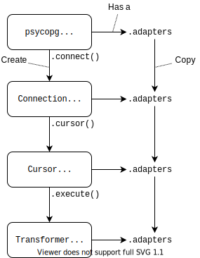

Data adaptation configuration#
The adaptation system is at the core of Psycopg and allows to customise the way Python objects are converted to PostgreSQL when a query is performed and how PostgreSQL values are converted to Python objects when query results are returned.
Note
For a high-level view of the conversion of types between Python and PostgreSQL please look at Passing parameters to SQL queries. Using the objects described in this page is useful if you intend to customise the adaptation rules.
Adaptation configuration is performed by changing the
adaptersobject of objects implementing theAdaptContextprotocol, for instanceConnectionorCursor.Every context object derived from another context inherits its adapters mapping: cursors created from a connection inherit the connection’s configuration.
By default, connections obtain an adapters map from the global map exposed as
psycopg.adapters: changing the content of this object will affect every connection created afterwards. You may specify a different template adapters map using thecontextparameter onconnect().The
adaptersattributes areAdaptersMapinstances, and contain the mapping from Python types andDumperclasses, and from PostgreSQL OIDs toLoaderclasses. Changing this mapping (e.g. writing and registering your own adapters, or using a different configuration of builtin adapters) affects how types are converted between Python and PostgreSQL.Dumpers (objects implementing the
Dumperprotocol) are the objects used to perform the conversion from a Python object to a bytes sequence in a format understood by PostgreSQL. The string returned shouldn’t be quoted: the value will be passed to the database using functions such asPQexecParams()so quoting and quotes escaping is not necessary. The dumper usually also suggests to the server what type to use, via itsoidattribute.Loaders (objects implementing the
Loaderprotocol) are the objects used to perform the opposite operation: reading a bytes sequence from PostgreSQL and creating a Python object out of it.Dumpers and loaders are instantiated on demand by a
Transformerobject when a query is executed.
Note
Changing adapters in a context only affects that context and its children objects created afterwards; the objects already created are not affected. For instance, changing the global context will only change newly created connections, not the ones already existing.
Dumpers and loaders life cycle#
Registering dumpers and loaders will instruct Psycopg to use them in the queries to follow, in the context where they have been registered.
When a query is performed on a Cursor, a
Transformer object is created as a local context to manage
adaptation during the query, instantiating the required dumpers and loaders
and dispatching the values to perform the wanted conversions from Python to
Postgres and back.
The
Transformercopies the adapters configuration from theCursor, thus inheriting all the changes made to the globalpsycopg.adaptersconfiguration, the currentConnection, theCursor.For every Python type passed as query argument, the
Transformerwill instantiate aDumper. Usually all the objects of the same type will be converted by the same dumper instance.According to the placeholder used (
%s,%b,%t), Psycopg may select a binary or a text dumper class (identified by theirformatattribute). When using the%s“AUTO” format, if the same type has both a text and a binary dumper registered, the last one registered byregister_dumper()will be used.Sometimes, just looking at the Python type is not enough to decide the best PostgreSQL type to use (for instance the PostgreSQL type of a Python list depends on the objects it contains, whether to use an
integerorbigintdepends on the number size…) In these cases the mechanism provided byget_key()andupgrade()is used to create more specific dumpers.
The query is executed. Upon successful request, the result is received as a
PGresult.For every OID returned by the query, the
Transformerwill instantiate aLoader. All the values with the same OID will be converted by the same loader instance.According to the format of the result, which can be text or binary, Psycopg will select either text loaders or binary loaders (identified by their
formatattribute).
Recursive types (e.g. Python lists, PostgreSQL arrays and composite types) will use the same adaptation rules.
As a consequence it is possible to perform certain choices only once per query (e.g. looking up the connection encoding) and then call a fast-path operation for each value to convert.
Querying will fail if a Python object for which there isn’t a Dumper
registered (for the right Format) is used as query parameter.
If the query returns a data type whose OID doesn’t have a Loader, the
value will be returned as a string (or bytes string for binary types).
Writing a custom adapter: XML#
Psycopg doesn’t provide adapters for the XML data type, because there are just
too many ways of handling XML in Python. Creating a loader to parse the
PostgreSQL xml type to ElementTree is very simple, using the
psycopg.adapt.Loader base class and implementing the
load() method:
>>> import xml.etree.ElementTree as ET
>>> from psycopg.adapt import Loader
>>> # Create a class implementing the `load()` method.
>>> class XmlLoader(Loader):
... def load(self, data):
... return ET.fromstring(data)
>>> # Register the loader on the adapters of a context.
>>> conn.adapters.register_loader("xml", XmlLoader)
>>> # Now just query the database returning XML data.
>>> cur = conn.execute(
... """select XMLPARSE (DOCUMENT '<?xml version="1.0"?>
... <book><title>Manual</title><chapter>...</chapter></book>')
... """)
>>> elem = cur.fetchone()[0]
>>> elem
<Element 'book' at 0x7ffb55142ef0>
The opposite operation, converting Python objects to PostgreSQL, is performed
by dumpers. The psycopg.adapt.Dumper base class makes it easy to implement one:
you only need to implement the dump() method:
>>> from psycopg.adapt import Dumper
>>> class XmlDumper(Dumper):
... # Setting an OID is not necessary but can be helpful
... oid = psycopg.adapters.types["xml"].oid
...
... def dump(self, elem):
... return ET.tostring(elem)
>>> # Register the dumper on the adapters of a context
>>> conn.adapters.register_dumper(ET.Element, XmlDumper)
>>> # Now, in that context, it is possible to use ET.Element objects as parameters
>>> conn.execute("SELECT xpath('//title/text()', %s)", [elem]).fetchone()[0]
['Manual']
Note
You can use a TypesRegistry, exposed by
any AdaptContext, to obtain information on builtin types, in
the form of a TypeInfo object:
# Global types registry
>>> psycopg.adapters.types["text"]
<TypeInfo: text (oid: 25, array oid: 1009)>
# Types registry on a connection
>>> conn.adapters.types["integer"]
<TypeInfo: int4 (oid: 23, array oid: 1007)>
The same method can be used to get information about extension types if
they have been registered on that context using the
TypeInfo.register() method:
>>> (t := psycopg.types.TypeInfo.fetch(conn, "hstore"))
<TypeInfo: hstore (oid: 770082, array oid: 770087)>
>>> t.register() # globally
>>> psycopg.adapters.types["hstore"]
<TypeInfo: hstore (oid: 770082, array oid: 770087)>
Example: converting empty strings to NULL#
Changed in version 3.2: The dump() method can also return None, which will be stored as
NULL in the database.
If you prefer to store missing values as NULL, in the database, but
your input may contain empty strings, you can subclass the stock string dumper
to return None upon empty or whitespace-only strings:
>>> from psycopg.types.string import StrDumper
>>> class NullStrDumper(StrDumper):
... def dump(self, obj):
... if not obj or obj.isspace():
... return None
... return super().dump(obj)
>>> conn.adapters.register_dumper(str, NullStrDumper)
>>> conn.execute("select %s, %s, %s, %s", ("foo", "", "bar", " ")).fetchone()
('foo', None, 'bar', None)
Example: PostgreSQL numeric to Python float#
Normally PostgreSQL numeric values are converted to Python
Decimal instances, because both the types allow fixed-precision
arithmetic and are not subject to rounding.
Sometimes, however, you may want to perform floating-point math on
numeric values, and Decimal may get in the way (maybe because it is
slower, or maybe because mixing float and Decimal values causes Python
errors).
If you are fine with the potential loss of precision and you simply want to
receive numeric values as Python float, you can register on
numeric the same Loader class used to load
float4/float8 values. Because the PostgreSQL textual
representation of both floats and decimal is the same, the two loaders are
compatible.
conn = psycopg.connect()
conn.execute("SELECT 123.45").fetchone()[0]
# Decimal('123.45')
conn.adapters.register_loader("numeric", psycopg.types.numeric.FloatLoader)
conn.execute("SELECT 123.45").fetchone()[0]
# 123.45
In this example the customised adaptation takes effect only on the connection
conn and on any cursor created from it, not on other connections.
Example: handling infinity date#
Suppose you want to work with the “infinity” date which is available in PostgreSQL but not handled by Python:
>>> conn.execute("SELECT 'infinity'::date").fetchone()
Traceback (most recent call last):
...
DataError: date too large (after year 10K): 'infinity'
One possibility would be to store Python’s datetime.date.max as PostgreSQL
infinity. For this, let’s create a subclass for the dumper and the loader and
register them in the working scope (globally or just on a connection or
cursor):
from datetime import date
# Subclass existing adapters so that the base case is handled normally.
from psycopg.types.datetime import DateLoader, DateDumper
class InfDateDumper(DateDumper):
def dump(self, obj):
if obj == date.max:
return b"infinity"
elif obj == date.min:
return b"-infinity"
else:
return super().dump(obj)
class InfDateLoader(DateLoader):
def load(self, data):
if data == b"infinity":
return date.max
elif data == b"-infinity":
return date.min
else:
return super().load(data)
# The new classes can be registered globally, on a connection, on a cursor
cur.adapters.register_dumper(date, InfDateDumper)
cur.adapters.register_loader("date", InfDateLoader)
cur.execute("SELECT %s::text, %s::text", [date(2020, 12, 31), date.max]).fetchone()
# ('2020-12-31', 'infinity')
cur.execute("SELECT '2020-12-31'::date, 'infinity'::date").fetchone()
# (datetime.date(2020, 12, 31), datetime.date(9999, 12, 31))